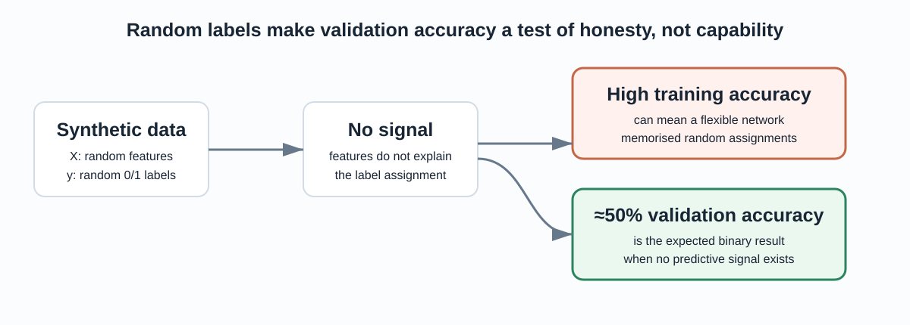
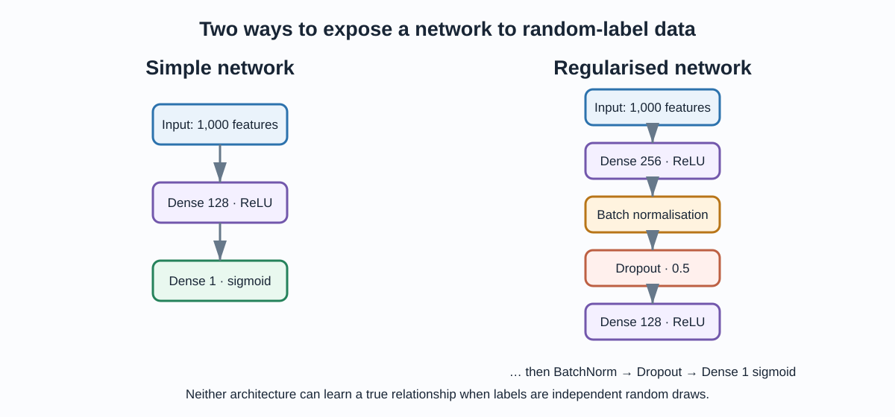

The key idea
A neural network can fit accidental patterns in a finite training sample. To make that visible, this project creates 1,000 random feature vectors and independently draws binary labels. There is no predictive signal to discover, so chance-level validation accuracy is the expected honest outcome.
What the random-label control teaches

A successful generalisation claim needs independent evidence beyond a training score.
| Result pattern | Meaning |
|---|---|
| Training accuracy rises while validation stays near 50% | The model can memorise noise but cannot generalise it. |
| Validation accuracy is repeatedly above chance | Audit the split, seeds, labels and state for leakage before interpreting it. |
| Regularisation reduces training fit | It can make memorisation harder; it cannot create signal. |
Architectures in the notebook

The deeper model changes optimisation and capacity, but not the absence of a target relationship.
Input → Dense(128, ReLU) → sigmoid output
Dense layers plus batch normalisation and 50% dropout
Sigmoid with binary cross-entropy
What is being practised
The notebook focuses on Keras mechanics: sequential model construction, compilation, train/validation splitting, early stopping, regularisation layers, mixed-precision configuration and model serialisation. Saved models are teaching artefacts, not reusable predictive systems, because their source data is random and regenerated on each run.
Run and improve it
python -m venv .venv .venv\Scripts\Activate.ps1 python -m pip install -r requirements.txt jupyter notebook notebooks/01_neural_network_experiments.ipynb
The first rigorous improvement is reproducibility: seed NumPy and TensorFlow, record package versions, and run repeated trials. Then add a synthetic dataset with a known signal and compare it with the random-label control. Read the README for the full walkthrough.